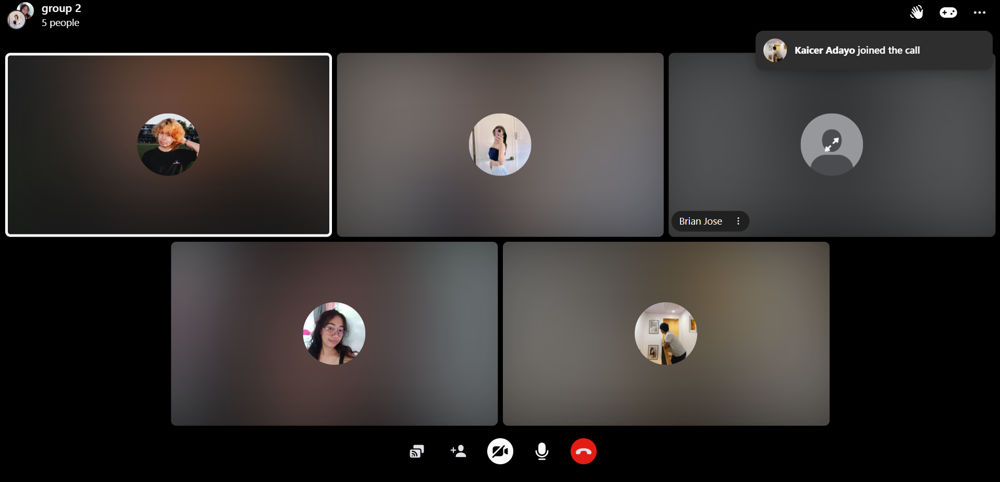
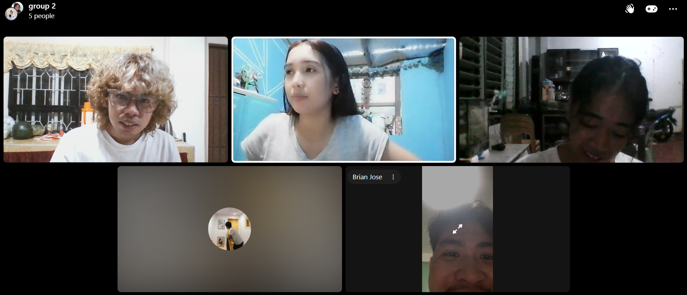
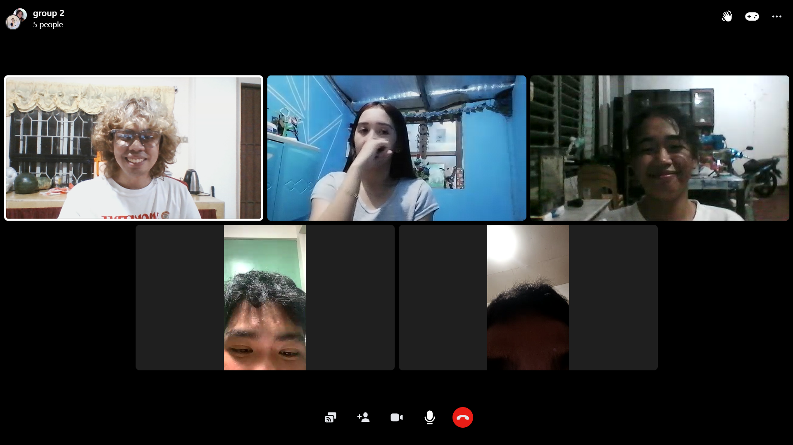
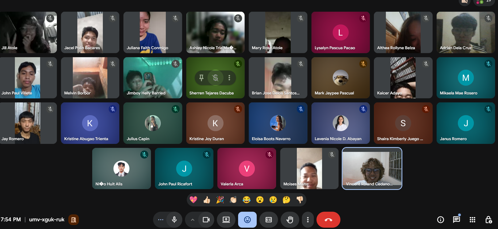
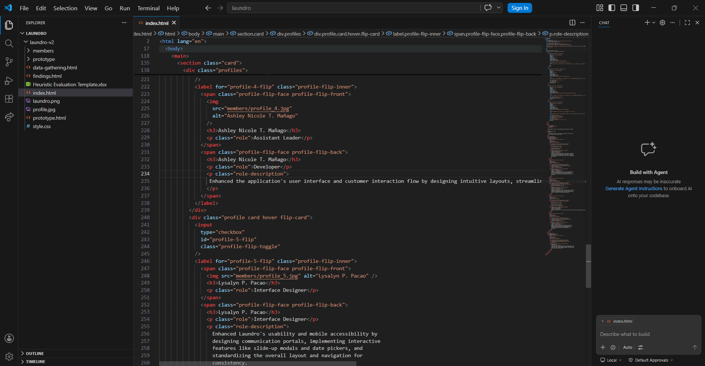
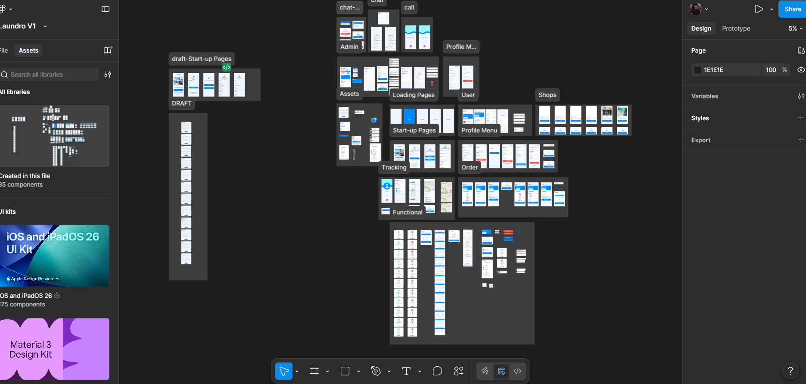
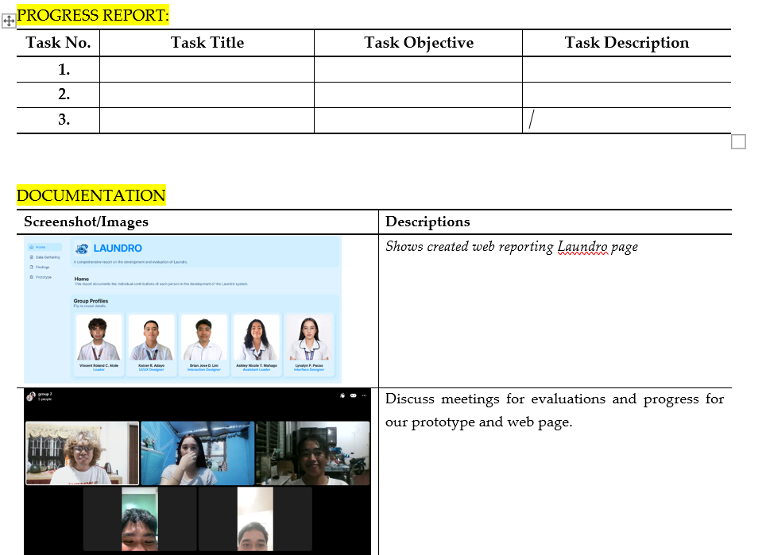

LAUNDRO
A comprehensive report on the development and evaluation of Laundro.
Data Gathering
This section outlines the instruments and procedures used to evaluate the prototype. The evaluation was conducted primarily via Heuristic Evaluation and an extended User Survey.
Evaluation Instrument & Profile
The primary tool used was the Heuristic Evaluation Template, scoring the application across Jakob Nielsen's 10 Usability Heuristics. Evaluators tested both Customer and Shop Owner user flows.
| Evaluator Name | Role Focus | Total Observations Logged |
|---|---|---|
| Ashley Nicole T. Mañago | Customer / UI Workflows | 10 Observations |
| Vincent Roland C. Atole | System States / Data Tracking | 10 Observations |
| Lysalyn P. Pacao | User Navigation / Workflows | 9 Observations |
| Brian Jose D. Lim | Interface Design / Aesthetics | 9 Observations |
| Kaicer R. Adayo | Error Prevention / Bug Finding | 9 Observations |
Survey Respondents Profile & Rankings
In addition to heuristic tracking, a comprehensive user survey was deployed. The survey collected responses from 20 participants regarding the usability, convenience, and overall impressions of the Laundro app.
| Demographic Category | Primary Data Point (Rank 1) | Secondary Data Points |
|---|---|---|
| Gender Distribution | Female (11 respondents) | Male (9 respondents) |
| Year Level | 2nd Year (11 respondents) | 3rd Year (5), 1st Year (3), 4th Year (1) |
| Laundry Service Experience | No Previous Experience (12 respondents) | Yes (8 respondents) |
| Laundry Service Frequency | Never (10 respondents) | Rarely (6), Weekly (2), Monthly (2) |
| App Familiarity | Familiar with Booking Apps (14 respondents) | Not Familiar (6 respondents) |
Project Documentation & Process
Below is a gallery showcasing our team's active work process throughout the data gathering, interface iteration, and prototype evaluation stages. Click on any block to expand the screenshot and review logs.

Collaborative Brainstorming
Documentation of our recurring virtual group call sessions. The team explicitly stays aligned here to pitch, critique, and exchange layout ideas to shape our core user workflows.

Heuristic Assessment (Part 1)
Rigorously checking the Laundro UI components against Nielsen's 10 principles to systematically pinpoint design inconsistencies and navigation flaws.

Heuristic Assessment (Part 2)
Reviewing and mapping identified cosmetic or system flaws into respective severity categories to lay down precise actionable improvements.

Usability Testing & Survey Tracking
Managing quantitative user feedback forms to extract demographic matrices and compute overall usability satisfaction ratings.

UI Iteration & Code Structuring
Translating evaluation suggestions directly into structural code adjustments to perfect margins, button responses, and accessibility rules.

System Validation & Architecture Tweaks
Assessing structural parameters and validating that functional components, modals, and layouts scale cleanly across responsive views.

Final Findings Synthesis
Consolidating cross-examination remarks and compiling metrics to generate comprehensive usability suggestions for the Laundro report platform.